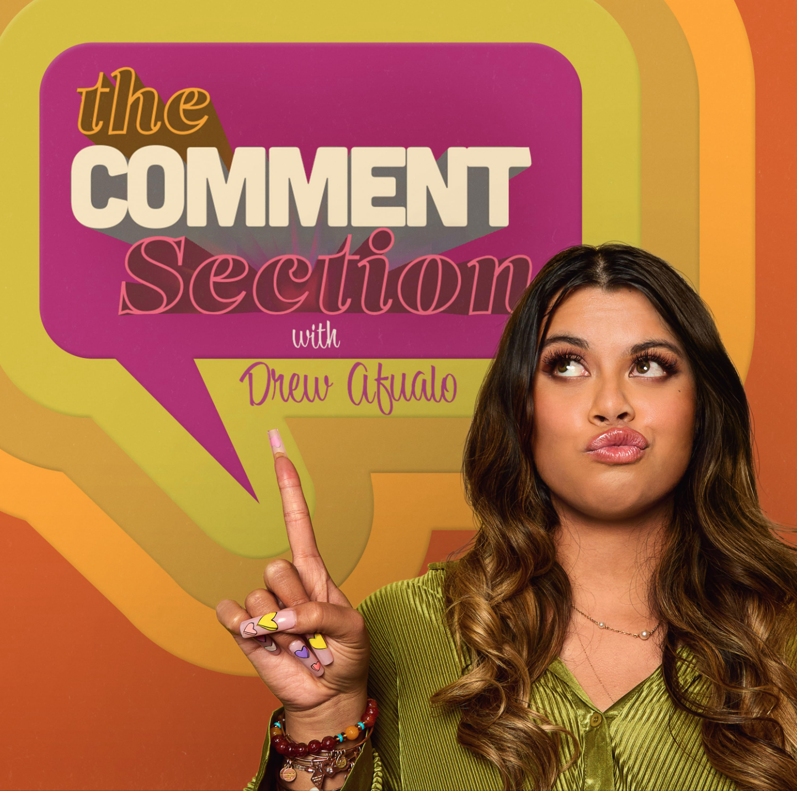
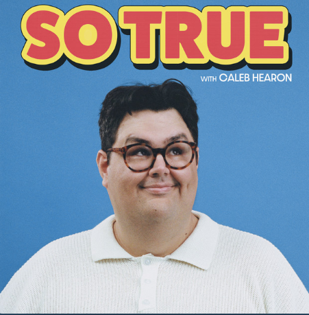
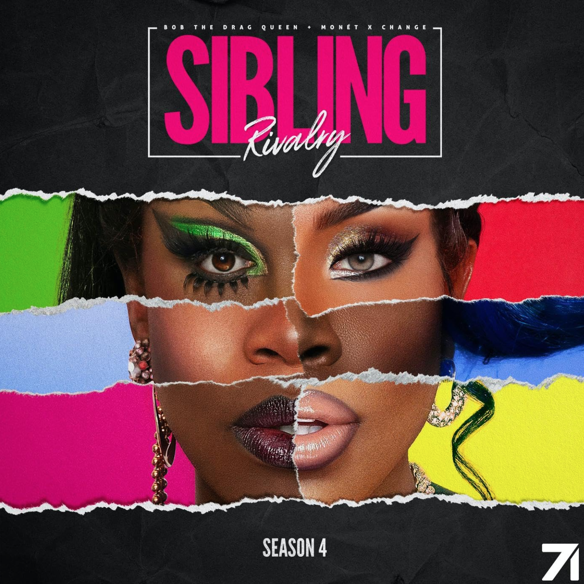
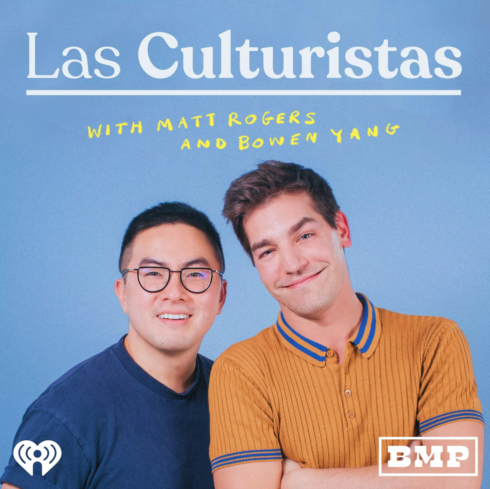
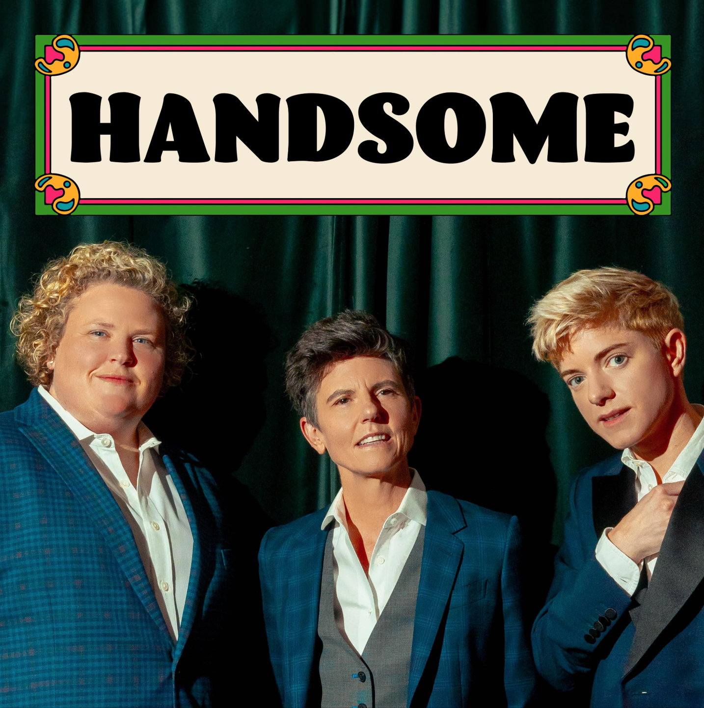
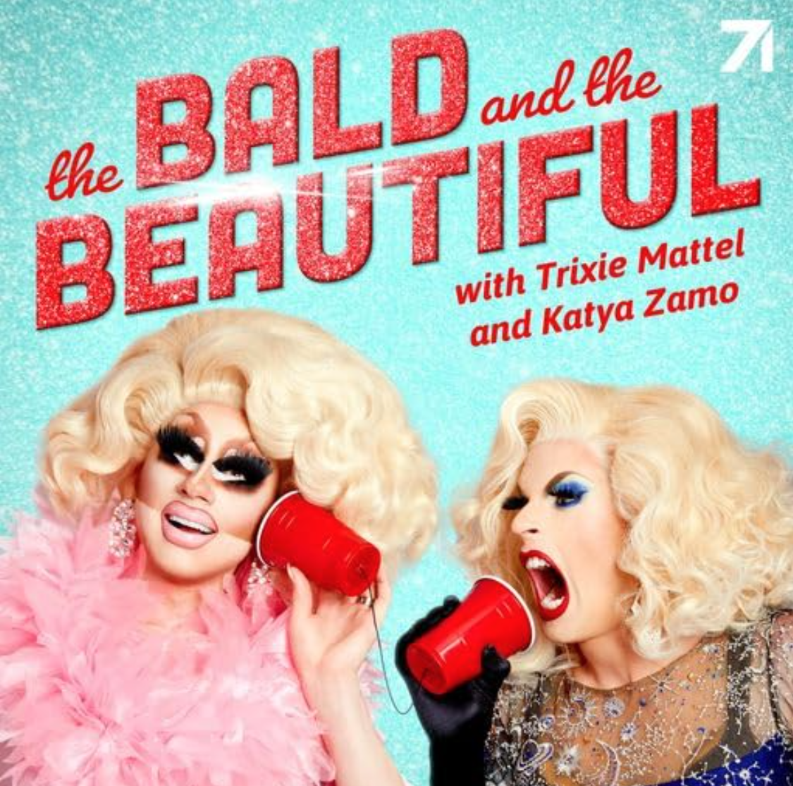
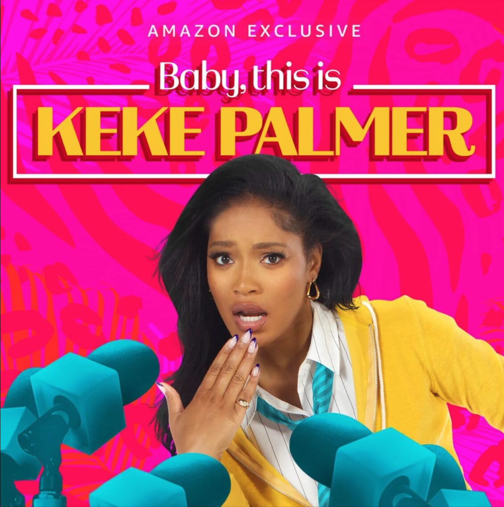

7 Inclusive Comedy Podcasts
Podcasts are rising in popularity as a new way of listening to different perspectives.There are many genres a podcast listener could choose, but one that won't fail to cheer listener up is a comedy based podcast. If you're interested on listening to a new perspective -- here are seven podcasts that range in diversity of hosts and guests.
The Comment Section
Hosted by: Drew Afualo
This podcast hosted by Drew Afualo explores how televison, music, and comedy creators deal with online hate. Afualo uses segements and personal anetdotes to ask the guest questions. She interviews musicians, drag queens, comedians, actors, and other types of content creators. Afualo first rose to fame from her online content.
So True
Hosted by: Caleb Hearon
This podcast hosted by Caleb Hearon is aimed at interviewing mainly Hearon's friends. A lot of those friends are comedians and musicians. Hearon and the guests talk about comedy, but they also discuss Hearon's interests in politics and religion. Hearon started as and is currently a stand-up comedian, but has also acted a few films.
Sibling Rivalry
Hosted by: Monét X Change and Bob The Drag Queen
This podcast hosted by drag queens Monét X Change and Bob The Drag Queen is a space where they mainly chat with each other. Occasionally, the two will interview people, but it's a podcast dedicated to talking about the current season of RuPaul's Drag Race. Both Monét X Change and Bob The Drag Queen appeared on the television series RuPaul's Drag Race.
Las Culturistas
Hosted by: Bowen Yang and Matt Rogers
This podcast hosted by Bowen Yang and Matt Rogers explores the latest pop-culture trends and moments. The two also bring in pop icons ranging from musicians to actors.
Handsome
Hosted by: Tig Notaro, Fortune Feimster, and Mae Martin
This podcast hosted by Tig Notaro, Fortune Feimster, and Mae Martin explores the generational differences of the three hosts experiences being queer. They typically spend an episode answering one question from a friend. Each comedian has started in stand-up, but they have each also acted in television and films.
The Bald and the Beautiful
Hosted by: Trixie and Katya
This podcast hosted by drag queens Trixie and Katya is a space where the two get to talk with one another about various topics. Their content varies as the topics are never the same; sometimes the topics come from recent shows they've watched, and other times the topics come from random thoughts. Both queens appeared in the television series RuPaul's Drag Race.
Baby, This is Keke Palmer
Directed by: Robert Wise, Jerome Robbins
This podcast hosted by Keke Palmer is an exploration of pop-culture, understandning the world, and being vulnerable in a humorous way. Palmer interviews famous musicians, actors, and friends. Palmer first started her career acting in films and television shows as a young girl.